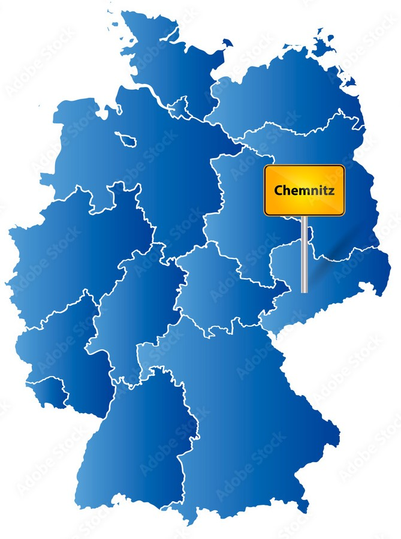
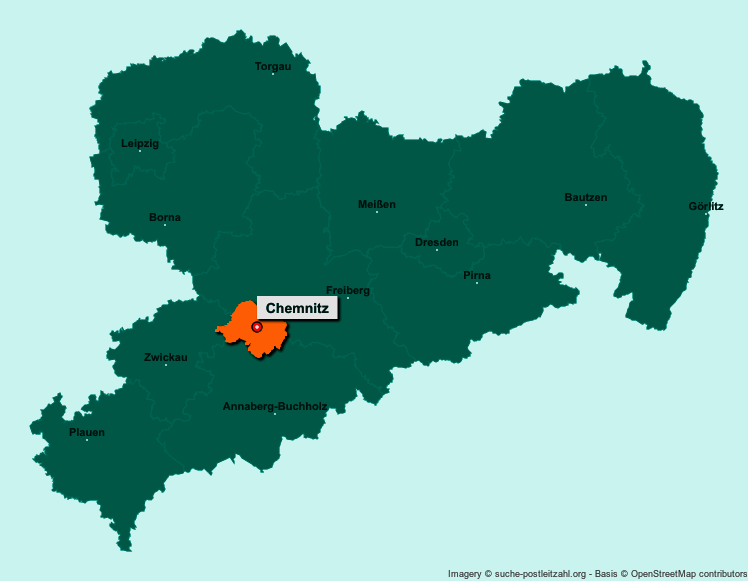

Großstadt in Sachsen, Deutschland
Chemnitz (von 1953 bis 1990 Karl-Marx-Stadt) ist eine kreisfreie Stadt im Südwesten des Freistaates Sachsen und dessen drittgrößte Großstadt nach Leipzig und Dresden. Wegen Rauch- und Schmutzentwicklung während der Industrialisierung erhielt Chemnitz den Beinamen Sächsisches Manchester.
Wappen |
Deutschlandkarte |
|---|---|
|  | |
Basisdaten |
|
| Koordinaten: | 50° 50′ N, 12° 55′ O |
| Bundesland: | Sachsen |
| Höhe: | 297 m ü. NHN |
| Fläche: | 221,03 km2 |
| Einwohner: | 245.150 (31. Dez. 2023) |
| Bevölkerungsdichte: | 1109 Einwohner je km2 |
| Postleitzahlen: | 09111–09131, 09224, 09228, 09247 |
| Vorwahlen: | 0371, 037200, 037209, 03722, 03726 |
| Kfz-Kennzeichen: | C |
| Gemeindeschlüssel: | 14 5 11 000 |
| LOCODE: | DE CHE |
| NUTS: | DED41 |
| Stadtgliederung: | 39 Stadtteile inkl. 8 Ortschaften |
| Adresse der Stadtverwaltung: | Markt 1 09111 Chemnitz |
| Website: | www.chemnitz.de |
| Oberbürgermeister: | Sven Schulze |
Lage der Stadt Chemnitz in Sachsen |
|
|  | |